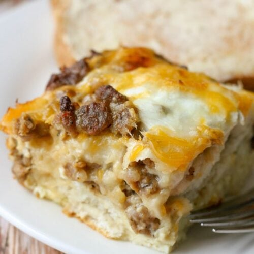

Breakfast Casserole

Description
A delicious, easy to make casserole that will please the whole family!
Make the perfect breakfast in an hour or less!
Ingredients
- 6 eggs, beaten
- 1 cup milk
- 1/2 teaspoon salt
- 1/8 teaspoon ground black pepper
- cooking spray
- 3 slices bread, torn in pieces
- 1 (12 ounce) package cooked breakfast sausage
- 1/2 cup Monterey Jack cheese
- 1/2 cup shredded Cheddar cheese
Steps
- Whisk eggs, milk, salt, and black pepper together in a bowl.
- Spray a 2-quart baking dish with cooking spray. Spread bread
pieces out in an even layer on the bottom of the prepared dish; top
with sausage, Monterey Jack cheese, egg mixture, and Cheddar cheese,
respectively. Cover the baking dish with plastic wrap and refigerate,
8 hours to overnight.
- Preheat oven to 325 degrees F (165 degrees C). Remove casserole
from refrigerator and let sit at room temperature for 15 minutes.
- Bake casserole in the preheated oven until bubbling and hot throughout,
about 45 minutes.
Return